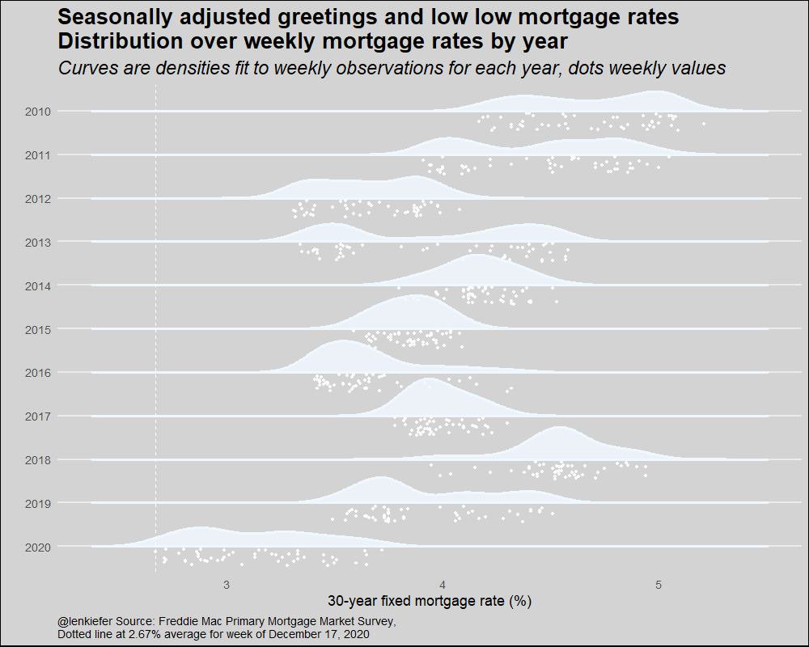

Seasonally adjusted greetings to you and yours. For you I have an animated chart, a variation on our rate cloud with a wintry theme.

R code below.
We’ll grab mortgage rate data, make a few new variables and then plot the chart using ggridges::geom_density_ridges2. Using the raincloud option for the poisition argument in ggridges::geom_density_ridges2 places the individual data points below the density plots. Using various shades of white we can turn the rain cloud into a snow cloud. Then with a little animation we can create a snowfall effect.
# replace with path to save your files
mydir <- FILEPATH
#####################################################################################
# load libraries----
#####################################################################################
library(data.table)
library(ggridges)
library(tidyverse)
library(gganimate)
library(lubridate)
# replace with path to save your files
mydir <- FILEPATH
#####################################################################################
# get data ----
#####################################################################################
df <- fread("http://www.freddiemac.com/pmms/docs/PMMS_history.csv")
df$date <- as.Date(df$date,format="%m/%d/%Y")
df <- mutate(df,year=year(date),
yearf=fct_reorder(factor(year(date)),-year))
#####################################################################################
# make plot ----
#####################################################################################
a <-
ggplot(
data = bind_rows(
df %>% filter(year > 2009) %>% mutate(mycolor = "white"),
df %>% filter(year > 2009) %>% mutate(mycolor =
"aliceblue"),
df %>% filter(year > 2009) %>% mutate(mycolor =
"ghostwhite")
),
aes(
y = forcats::fct_reorder(yearf, -year),
x = pmms30,
group = year,
fill = mycolor,
color = mycolor
)
) +
geom_density_ridges2(
size = 1.2,
alpha = 0.85,
scale = 0.85,
position = "raincloud",
point_color = "white",
jittered_points = TRUE
) +
scale_color_identity() +
scale_fill_identity() +
theme_minimal(base_size = 18) +
theme(
panel.grid.minor = element_blank(),
plot.background = element_rect(fill = "lightgray"),
plot.title = element_text(size = rel(1.5), face = "bold"),
plot.subtitle = element_text(size = rel(1.3), face = "italic"),
plot.caption = element_text(hjust = 0),
panel.grid.major.x = element_blank()
) +
geom_vline(
data = . %>% filter(date == max(date)),
linetype = 2,
color = "white",
aes(xintercept = pmms30)
) +
labs(
x = "30-year fixed mortgage rate (%)\n",
y = "",
caption = paste0(
"@lenkiefer Source: Freddie Mac Primary Mortgage Market Survey,",
"\nDotted line at ",
df[df$date == max(df$date), ]$pmms30,
"% average for week of ",
as.character(max(df$date), format = "%B %d, %Y")
),
title = "Seasonally adjusted greetings and low low mortgage rates\nDistribution over weekly mortgage rates by year",
subtitle = "Curves are densities fit to weekly observations for each year, dots weekly values"
)
# animate
a <- a+ transition_states(mycolor,wrap=TRUE)
animate(a,nframes=60, width=1000,height=800,end_pause=0,fps=40)
# save animation
gganimate::anim_save(paste0(mydir,"rate_cloud.gif"))